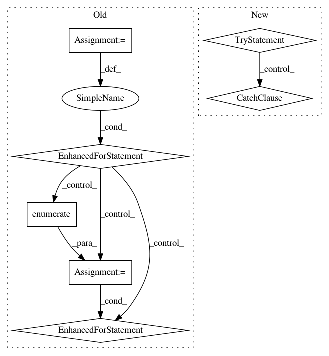

ed7782f0f59f1eef6453f47633fe9e15bda00f84,deepchem/models/tensorflow_models/__init__.py,TensorflowGraphModel,fit,#TensorflowGraphModel#Any#Any#Any#Any#Any#,298
Before Change
saver = tf.train.Saver(max_to_keep=max_checkpoints_to_keep)
// Save an initial checkpoint.
saver.save(sess, self._save_path, global_step=0)
for epoch in range(nb_epoch):
avg_loss, n_batches = 0., 0
for ind, (X_b, y_b, w_b, ids_b) in enumerate(
// Turns out there are valid cases where we don"t want pad-batches
// on by default.
//dataset.iterbatches(batch_size, pad_batches=True)):
dataset.iterbatches(
self.batch_size, pad_batches=self.pad_batches)):
if ind % log_every_N_batches == 0:
log("On batch %d" % ind, self.verbose)
// Run training op.
feed_dict = self.construct_feed_dict(X_b, y_b, w_b, ids_b)
fetches = self.train_graph.output + [
train_op, self.train_graph.loss
]
fetched_values = sess.run(fetches, feed_dict=feed_dict)
output = fetched_values[:len(self.train_graph.output)]
loss = fetched_values[-1]
avg_loss += loss
y_pred = np.squeeze(np.array(output))
y_b = y_b.flatten()
n_batches += 1
if epoch % checkpoint_interval == checkpoint_interval - 1:
saver.save(sess, self._save_path, global_step=epoch)
avg_loss = float(avg_loss) / n_batches
log("Ending epoch %d: Average loss %g" % (epoch, avg_loss),
self.verbose)
// Always save a final checkpoint when complete.
saver.save(sess, self._save_path, global_step=epoch + 1)
//////////////////////////////////////////////////////////////////////////////////////////////////////////////////////////// TIMING
time2 = time.time()
print("TIMING: model fitting took %0.3f s" % (time2 - time1), self.verbose)
After Change
enqueue_thread.start()
// Main training loop.
try:
epoch = 0
index = 0
index_in_epoch = 0
avg_loss = 0.0
while True:
if index_in_epoch % log_every_N_batches == 0:
log("On batch %d" % index_in_epoch, self.verbose)
// Run training op.
fetches = self.train_graph.output + [
train_op, self.train_graph.loss
]
fetched_values = sess.run(fetches)
loss = fetched_values[-1]
avg_loss += loss
index += 1
index_in_epoch += 1
if len(epoch_end_indices) > 0 and index >= epoch_end_indices[0]:
// We have reached the end of an epoch.
if epoch % checkpoint_interval == checkpoint_interval - 1:
saver.save(sess, self._save_path, global_step=epoch)
avg_loss = float(avg_loss) / index_in_epoch
log("Ending epoch %d: Average loss %g" % (epoch, avg_loss),
self.verbose)
index_in_epoch = 0
avg_loss = 0.0
del epoch_end_indices[0]
except tf.errors.OutOfRangeError:
// We have reached the end of the data.
pass
// Always save a final checkpoint when complete.
saver.save(sess, self._save_path, global_step=epoch + 1)
//////////////////////////////////////////////////////////////////////////////////////////////////////////////////////////// TIMING
time2 = time.time()
print("TIMING: model fitting took %0.3f s" % (time2 - time1), self.verbose)
In pattern: SUPERPATTERN
Frequency: 3
Non-data size: 7
Instances
Project Name: deepchem/deepchem
Commit Name: ed7782f0f59f1eef6453f47633fe9e15bda00f84
Time: 2017-03-23
Author: peter.eastman@gmail.com
File Name: deepchem/models/tensorflow_models/__init__.py
Class Name: TensorflowGraphModel
Method Name: fit
Project Name: NVIDIA/OpenSeq2Seq
Commit Name: 80373cedf76f85b47de78080712f508a46c5345c
Time: 2018-05-16
Author: okuchaiev@nvidia.com
File Name: open_seq2seq/models/text2text_test.py
Class Name: BasicText2TextWithAttentionTestOnHorovod
Method Name: test_train
Project Name: NVIDIA/OpenSeq2Seq
Commit Name: 80373cedf76f85b47de78080712f508a46c5345c
Time: 2018-05-16
Author: okuchaiev@nvidia.com
File Name: open_seq2seq/models/text2text_test.py
Class Name: BasicText2TextWithAttentionTest
Method Name: test_train